벤티365
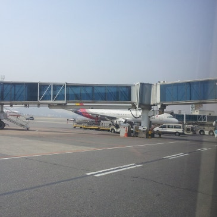
카카오벤티 '벤티365' 예약 안내 — 예약 방법과 가능 시간, 차량 기준 총정리
새벽 4시 공항인데 차량을 어떻게 잡지?", "골프백 네 개를 한 차에 실을 수 있을까?" 이동을 앞두고 이런 고민이 생기셨죠. 이 글은 카카오벤티 '벤티365'를 운영하
인천공항 마중 주차장 완전정리 — 무료 10분과 가장 가까운 주차 위치
가족이나 지인이 인천공항에 도착하는 날, 차로 마중을 나가려면 "어디에 어떻게 세워야 하나"부터 막막합니다. 이 글에서는 인천공항 마중 주차장의 무료 시간과 터미널별로 가
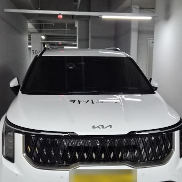
공항 픽업 예약 변경·취소 — 비행기 지연 때 대처 3단계
항공편이 두 시간 늦어지는데 픽업 차량은 원래 시간에 맞춰 나와 있다면, 그 대기 시간은 고스란히 손실이 됩니다. 이 글에서는 항공편이 지연되거나 결항됐을 때 공항 픽업
컨벤션·전시회 단체 이동 — 인원별 차량 선택과 예약 기준
팀으로 전시회에 가는데 차량을 어떻게 잡아야 하나"부터 막막하시죠. 인원이 다섯 명만 넘어도 일반 택시 두 대로는 사람과 짐을 함께 옮기기 어렵습니다. 결론부터 말씀드리면
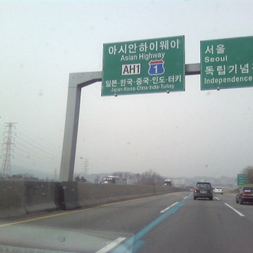
지방 출장 왕복 차량 예약 — 견적 요청 시 꼭 알려줄 6가지
다음 주 대전 출장이 잡혔는데 왕복 차량을 어떻게 구해야 할지 막막하셨죠. 이 글에서는 지방 출장 왕복 차량을 예약할 때 견적이 정확하게 나오도록 미리 정리해 보내야 할
김포공항 심야 도착 — 택시 잡히는 시간과 예약 기준
밤늦게 김포공항에 내렸는데 택시 승강장에 빈 차가 보이지 않아 한참 서 계셨던 적 있으시죠. 이 글에서는 김포공항에 심야 시간대 도착했을 때 택시를 잡을 수 있는 시간대가
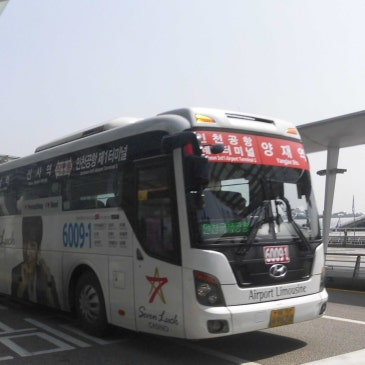
5~6인 가족 공항 이동 — 승합차 예약과 짐 적재 기준
부모님과 아이들까지 다섯 식구가 한꺼번에 공항으로 움직이려면 차 한 대로는 어림도 없다는 생각이 드실 겁니다. 이 글에서는 5~6인 가족이 공항으로 이동할 때 어떤 차량을
골프장 왕복 차량 예약 — 골프백 4세트 싣는 차량 고르기
골프 약속이 잡히면 라운드보다 먼저 걱정되는 것이 이동입니다. 이 글에서는 골프장 왕복 차량을 예약할 때 확인해야 할 기준을 정리했습니다. 결론부터 말하면 골퍼 4인과 골

새벽 공항 이동 예약 — 첫차 05:20 전 차량 확보하는 법
새벽 비행기라 전날 밤부터 마음이 놓이지 않으시죠. 이 글에서는 새벽·첫차 시간대에 인천공항으로 가는 방법을 공항철도 공식 시각표와 인천국제공항공사 안내 기준으로 정리했습
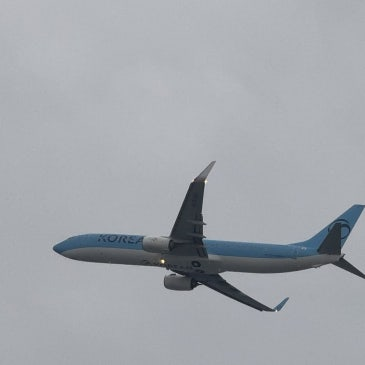
인천공항 픽업 예약 — 도착편 기준 몇 시에 예약해야 하나
해외여행이나 출장을 마치고 인천공항에 도착했는데, 마중 나온 차를 못 찾아 입국장에서 헤매신 적 있으시죠. 이 글에서는 인천공항 픽업 예약 시간을 도착편 기준으로 어떻게
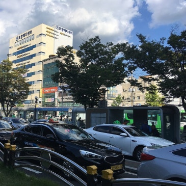
장거리 택시 예약 완전정리 — 지방 이동 요금과 주의사항
지방 출장이나 골프 원정을 앞두고 "택시로 가면 요금이 얼마나 나올까" 막막하셨죠. 이 글에서는 장거리 택시 요금이 어떻게 계산되는지, 사전확정요금제와 미터기 중 어느 쪽
제주 렌터카 없이 이동하기 — 공항버스·택시 요금 총정리
제주 여행을 준비하면서 렌터카를 빌릴지, 대중교통으로 다닐지 고민되시죠. 이 글에서는 렌터카 없이 제주를 이동하는 방법을 공항리무진·시내버스·택시로 나눠, 실제 요금과 소
지방 출장 교통비 계산법 — KTX·버스·차량 총액 비교
내일 아침 지방 출장을 다녀오는데, 기차표를 끊을지 차를 가져갈지 계산이 서지 않으시죠. 이 글에서는 지방 출장 교통비를 KTX·고속버스·자가용으로 나눠, 실제 요금과 소
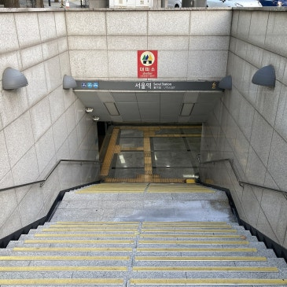
지방 출장 짐 꾸리기 — 하루·1박 체크리스트와 기차 반입 규정
내일 아침 지방 출장인데 가방을 어디까지 챙겨야 할지 막막하신 적 있으시죠. 이 글에서는 하루 출장과 1박 출장의 짐을 나눠 정리하고, 기차에 들고 탈 수 있는 기준과 2
컨벤션·전시회 참가 준비물 — 캐리어 보관과 이동 계획
컨벤션·전시회 참가를 앞두고 "무엇을 챙기고, 짐은 어디에 두고, 몇 시에 출발해야 하나"가 한꺼번에 고민되시죠. 행사장은 하루 종일 서서 걷는 곳입니다. 캐리어를 끌고
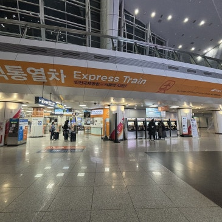
송도컨벤시아 가는 법 — 인천공항에서 공항철도 90분·4,150원
송도컨벤시아에서 열리는 전시회나 컨퍼런스에 참석해야 하는데, 인천공항에 내려서 어떻게 이동해야 할지 막막하시죠. "택시를 타야 하는지, 지하철로도 갈 수 있는지" 하는 질
벡스코 가는 법 — 김해공항 리무진 9,500원·KTX 연결
부산 벡스코에서 열리는 전시회나 컨퍼런스에 참석해야 하는데, 김해공항에서 어떻게 가야 하는지, KTX를 타면 어느 역에서 내려야 하는지 헷갈리시죠. 이 글에서는 벡스코 가
춘천·원주 지방출장 이동 — ITX 9,800원, KTX 50분
아침 회의에 맞춰 춘천이나 원주로 출장을 가야 하는데, 기차와 버스 중 무엇이 나은지 망설여지시죠. 이 글에서는 춘천·원주 지방출장 이동을 철도·시외버스·차량으로 나눠,
코엑스 컨벤션 이동 — 삼성역 vs 차량, 주차 15분 1,500원
전시회나 컨퍼런스를 위해 코엑스에 가야 하는데, 짐은 많고 삼성역에서 걸어가야 하는지 차로 가야 하는지 고민되시죠. 이 글에서는 코엑스 컨벤션 이동을 지하철·버스·차량 세
골프 18홀 라운딩 4시간 30분 — 티오프부터 홀아웃까지
새벽 6시 티오프를 예약해두고도 몇 시에 집을 나서야 할지, 라운딩이 몇 시에 끝나 뒤 약속을 잡아도 되는지 계산이 안 서서 막막하셨죠. 이 글에서는 18홀 라운딩에 실제
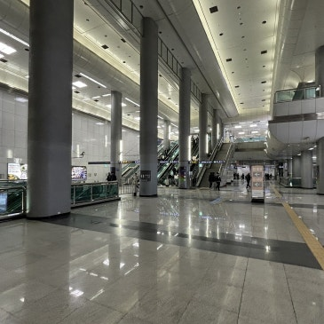
인천공항에서 김포공항 이동 — 국내선 환승 3가지 경로
해외에서 돌아와 국내선으로 갈아타야 하는데, 인천공항에서 김포공항까지 어떻게 움직여야 할지 막막하셨죠. 이 글에서는 인천공항에서 김포공항으로 이동하는 경로와 소요시간, 국
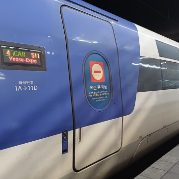
지방 출장 당일 왕복 — 광주·전주 KTX 시간과 요금 정리
내일 아침 광주나 전주로 다녀와야 하는데, 몇 시 기차를 타야 하고 몇 시에 돌아올 수 있는지부터 막막하신 분들이 많습니다. 이 글에서는 코레일 승차권 조회에서 직접 확인
골프장 드레스코드 5가지 — 청바지 금지·반바지 기간과 준비물
예약을 마치고 나서 "그래서 옷은 뭘 입고 가야 하나"에서 멈추시는 분이 많습니다. 그린피와 티오프 시간만 확인하고 출발했다가 클럽하우스 입구에서 제지를 받는 경우도 실제
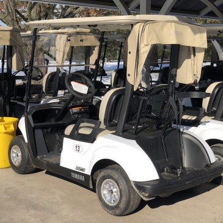
골프장 캐디피 15만원·카트비 — 라운딩 전 확인 5가지
라운딩을 마치고 정산하면서 "생각보다 많이 나왔다"고 느끼신 적 있으시죠. 그린피만 확인하고 예약했다가 캐디피와 카트비에서 한 번 더 놀라시는 분이 많습니다. 이 글에서는
인천공항 스마트패스 등록 방법 — 전용 출국장 5개 확대
출국 당일 아침, 출국장 입구 앞에 길게 늘어선 줄을 보며 마음이 급해지신 적 있으시죠. 이 글에서는 인천공항 스마트패스의 등록 방법과 이용 조건, 전용 출국장이 어디까지
대구·울산 출장 이동 비교 — KTX·고속버스·차량 시간과 비용
대구나 울산에 오전 회의가 하나 잡히면 전날부터 출발 시각 계산이 시작되십니다. 이 글에서는 서울에서 대구·울산으로 가는 방법을 KTX, 고속버스, 차량 세 가지로 나눠
골프장 예약·부킹 첫걸음 — 티타임 오픈 시점과 비용
골프장 예약을 처음 알아보면 어디서부터 손대야 할지 막막합니다. 골프에서는 예약을 부킹, 출발 시각을 티타임이라고 부르는데 용어부터 낯설게 느껴지실 겁니다. 이 글에서는
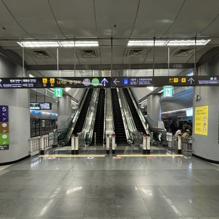
공항철도 직통열차 vs 일반열차 — 요금·소요시간·막차 비교
공항 가는 날, 캐리어를 끌고 서울역에 내려 표를 보면 직통열차와 일반열차가 나란히 보여 망설여지십니다. 두 열차는 같은 선로를 달리지만 정차역과 요금, 소요시간이 완전히
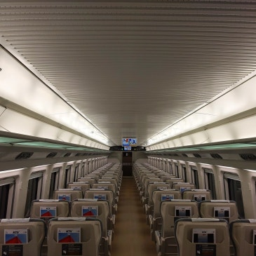
KTX·SRT·ITX·무궁화 차이 — 요금·소요시간 총정리
예매창을 열면 KTX, ITX-마음, ITX-새마을, 무궁화호가 한 줄에 섞여 있어 어느 것을 골라야 할지 망설여지십니다. 이 글에서는 열차 종류별 차이와 요금·소요시간을
부산 출장 당일 왕복 — KTX 첫차로 짜는 하루 동선
부산에 오전 회의가 하나 잡히면 전날 밤부터 일정 계산이 시작되십니다. 이 글에서는 부산 출장 당일 왕복이 실제로 가능한 시간표와 요금, 부산역 도착 후 시내 이동 동선까